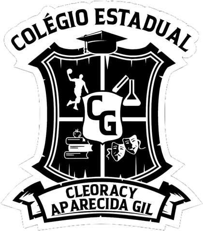
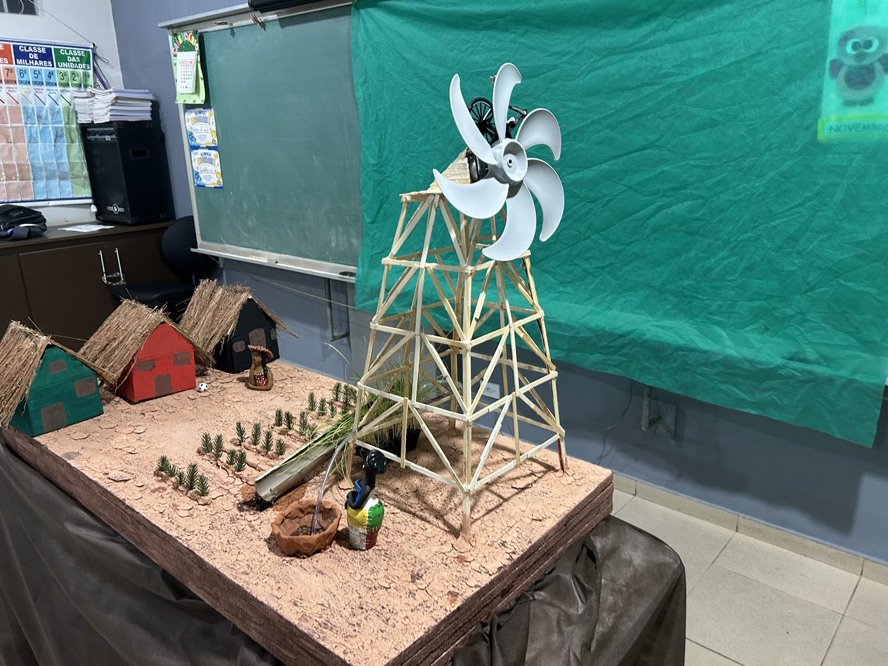
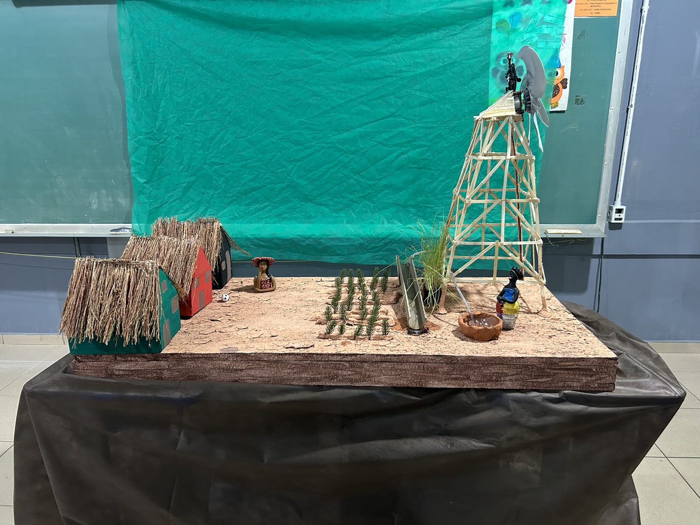
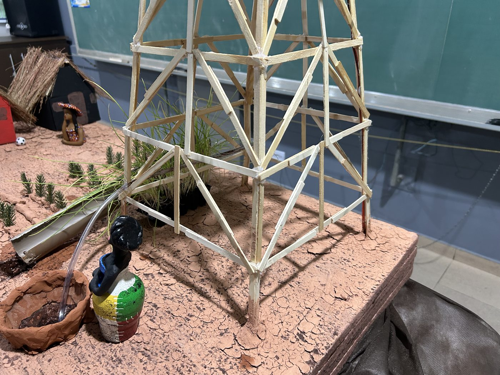
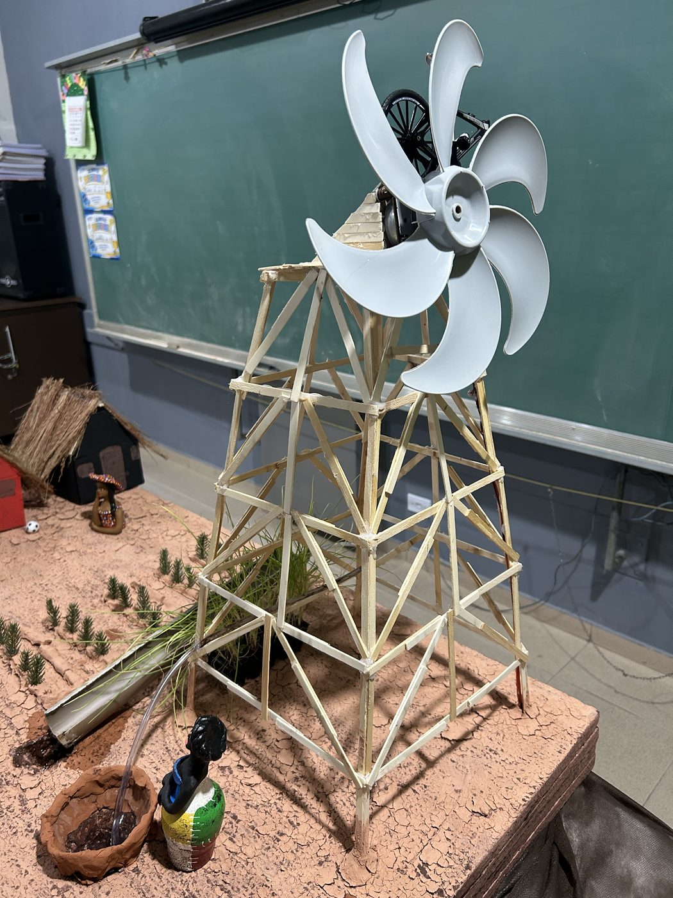
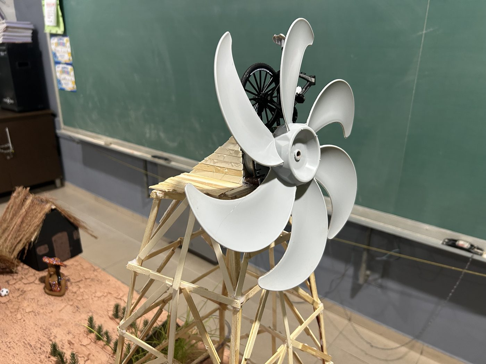
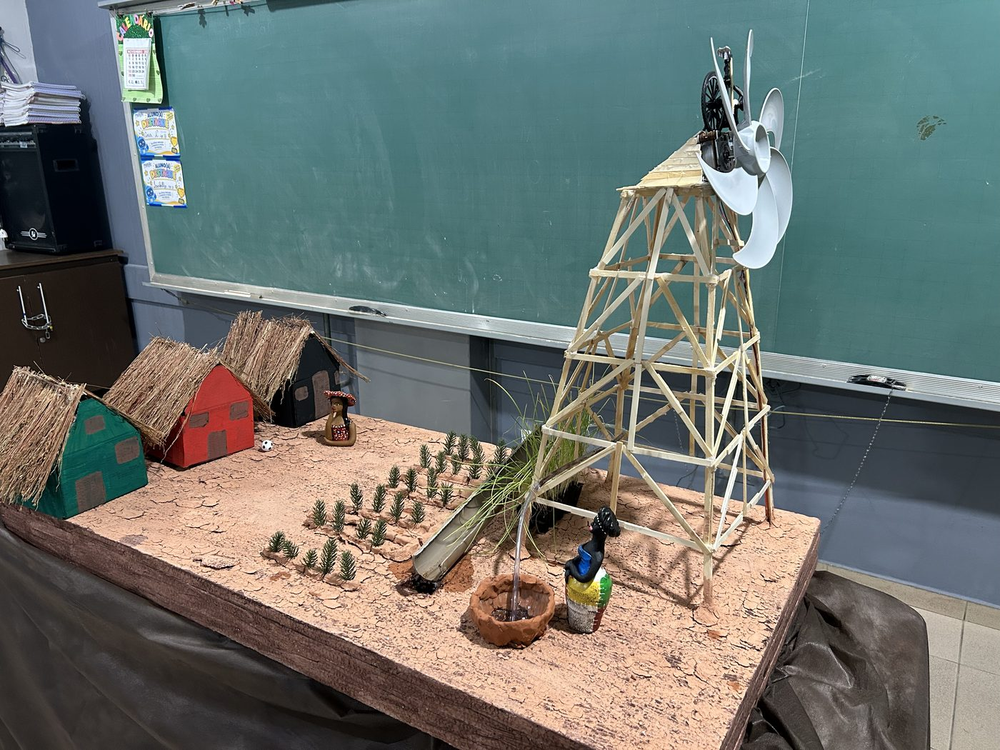
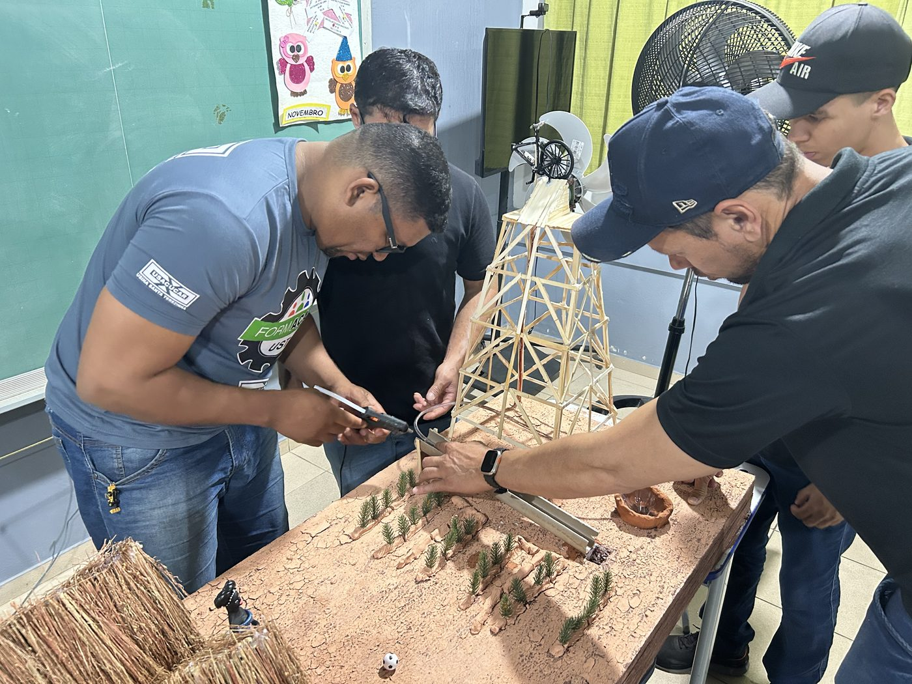

Peças de bicicleta
A roda, a corrente e o dínamo da bicicleta viraram o coração do gerador.

Colégio Estadual Cleoracy Aparecida Gil
A história real de William Kamkwamba, contada no livro
Curso Técnico em Desenvolvimento de Sistemas · 2º Semestre
Capítulo I
O Menino que Descobriu o Vento é um livro autobiográfico escrito por William Kamkwamba e pelo jornalista Bryan Mealer. Nele, William conta a sua própria história: a de um menino que cresceu em uma pequena aldeia do Malawi, um país localizado na África.
Desde pequeno, William é curioso e adora desmontar rádios para descobrir como funcionam. Quando sua comunidade enfrenta uma grave seca e falta de alimentos, ele decide usar seus conhecimentos e sua criatividade para encontrar uma solução. Mesmo diante de muitas dificuldades, ele não desiste de seu sonho de ajudar sua família e transformar a vida das pessoas ao seu redor.
Capítulo II
Primeiro vieram as enchentes, depois a seca. A comunidade de William perde as plantações de milho e começa a faltar comida.
Muitas famílias passam por dificuldades e enfrentam a fome. A situação fica ainda pior quando William precisa abandonar a escola por falta de dinheiro. Mesmo diante desses desafios, ele não perde a esperança e começa a procurar uma maneira de ajudar sua família e sua comunidade.
Toque nos cartões
Capítulo III
Fora da escola, William não para de aprender. Ele passa a frequentar a pequena biblioteca da escola primária de Wimbe, perto de sua aldeia, e estuda sozinho os livros de ciências.
Em um livro americano chamado Using Energy (“Usando a Energia”), ele encontra a imagem de um moinho de vento. Foi ali que teve a ideia que mudaria a vida de sua família para sempre: se o vento faz as pás girarem, as pás podem girar um dínamo — e o dínamo gera eletricidade. Com ela, seria possível ter luz em casa e, um dia, bombear água para irrigar a plantação.
Capítulo IV
William começa a construir seu moinho de vento utilizando materiais reciclados, peças de bicicleta e sucatas.
Ele passa dias no ferro-velho procurando peças, e muita gente na aldeia o chama de misala, que quer dizer “louco”. Mas William não desiste. Com a ajuda dos amigos Gilbert e Geoffrey, e com muita criatividade e dedicação, ele monta a sua invenção.
Deslize para o lado
A roda, a corrente e o dínamo da bicicleta viraram o coração do gerador.
Aquecidos, abertos e cortados, viraram as pás que capturam o vento.
Uma hélice velha de trator encontrada no ferro-velho serviu de base para o rotor.
Troncos de árvore formaram uma torre alta, para alcançar os ventos mais fortes.
Parafusos, arames e metais reaproveitados fizeram tudo se encaixar.
A energia gerada acendeu a primeira lâmpada da casa da família.
Gire as pás com o dedo para gerar energia, acender a lâmpada e levar água para a plantação.
Gire as pás com o dedo
Capítulo V
Em 2002, com 14 anos, William sobe na torre, o vento gira as pás e uma lâmpada se acende.
As pessoas que o chamavam de louco se juntam para ver. O moinho leva luz para a casa da família, faz o rádio tocar e carrega os celulares dos vizinhos. Ele prova que a inteligência, a criatividade e a persistência podem transformar vidas.
Sua conquista mostra que, com conhecimento e determinação, é possível superar grandes dificuldades e construir um futuro melhor.
Capítulo VI
A história de O Menino que Descobriu o Vento nos ensina que nunca devemos desistir dos nossos sonhos, mesmo quando enfrentamos dificuldades.
William Kamkwamba mostrou que, com criatividade, esforço e conhecimento, podemos encontrar soluções para grandes problemas. Sua história destaca a importância da educação, da persistência e da esperança para transformar a realidade e ajudar outras pessoas.
A principal lição é que uma grande ideia pode mudar muitas vidas.
“Eu tentei, e consegui.”
O nosso projeto
Para contar essa história, construímos uma maquete que reproduz o cenário do livro: a terra seca do Malawi, a plantação e o moinho de vento que trouxe energia e água.

fotos/maquete-final.jpgPintamos uma placa com a textura de terra rachada, representando a seca que atingiu a aldeia de William.

fotos/etapa-1.jpgFizemos as fileiras de plantas e o canal que leva a água do moinho até a plantação.

fotos/etapa-2.jpgMontamos uma estrutura treliçada com palitos de madeira, inspirada na torre de troncos que William construiu.

fotos/etapa-3.jpgReaproveitamos a hélice de um ventilador e ligamos a um pequeno motor que funciona como gerador, assim como o dínamo de bicicleta de William.

fotos/etapa-4.jpgCasinhas com telhado de palha, bonecos de barro e uma bicicleta em miniatura no alto da torre, homenagem às peças que William usou no seu moinho.

fotos/etapa-5.jpg
fotos/turma.jpgQuem fez
Colégio Estadual Cleoracy Aparecida Gil
Curso Técnico em Desenvolvimento de Sistemas
2º Semestre